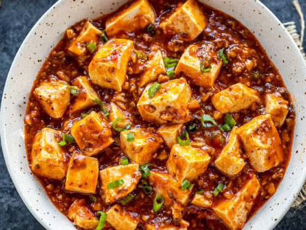

Recipe of the Week!
Mapo Tofu

Recipe Details
Prep Time: 15 mins
Cook Time: 20 mins
Total Time: 35 mins
Servings: 4
Ingredients
- 1 block of tofu (firm, cubed)
- 200g ground pork
- 2 tbsp doubanjiang (fermented bean paste)
- 1 tbsp soy sauce
- 1 tbsp sesame oil
- 2 garlic cloves (minced)
- 1 tsp ginger (minced)
- 1 tsp cornstarch (mixed with water)
- 1/2 cup chicken broth
- 1 tsp Sichuan peppercorns (optional, for spice)
- Green onions (for garnish)
Description
Mapo Tofu is a popular Sichuan dish celebrated for its bold flavors, rich sauce, and numbing heat from Sichuan peppercorns. The combination of silky tofu and savory pork in a spicy sauce creates a dish that’s perfect for any occasion!
Step-by-Step Instructions
Step 1 Prepare the tofu: Cut the block of tofu into small, bite-sized cubes. Boil water in a pot, add a pinch of salt, and gently simmer the tofu cubes for 2-3 minutes to firm them up. Drain and set aside.
Step 2 Toast the Sichuan peppercorns: If using Sichuan peppercorns, toast them in a dry pan over medium heat for 1-2 minutes until aromatic. Grind them into a fine powder and set aside.
Step 3 Cook the pork: Heat a wok or large frying pan over medium-high heat. Add the sesame oil, then stir-fry the ground pork until browned and fully cooked. Remove and set aside.
Step 4 Sauté aromatics: In the same pan, add minced garlic and ginger. Stir-fry for 1 minute until fragrant.
Step 5 Add doubanjiang: Stir in the doubanjiang (fermented bean paste). Cook for 1-2 minutes to release its flavor and red color.
Step 6 Combine ingredients: Return the cooked pork to the pan. Add chicken broth, soy sauce, and the tofu cubes. Gently mix to coat the tofu with the sauce.
Step 7 Thicken the sauce: Mix cornstarch with water to create a slurry. Slowly pour the slurry into the pan while stirring. Simmer until the sauce thickens and coats the tofu evenly.
Step 8 Season and garnish: Add the ground Sichuan peppercorns (if using) and adjust salt levels as needed. Garnish with chopped green onions before serving.
Step 9 Serve: Transfer the Mapo Tofu to a serving dish. Serve hot with steamed rice or as a side dish to other Chinese-inspired meals.